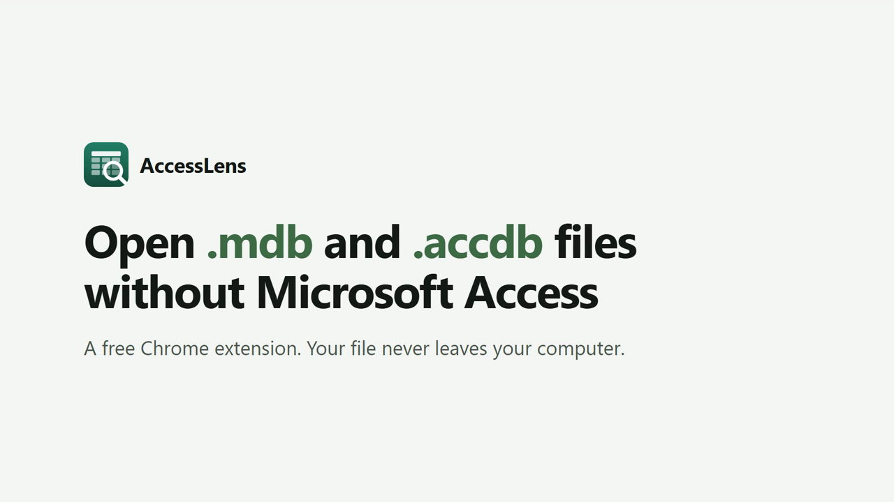
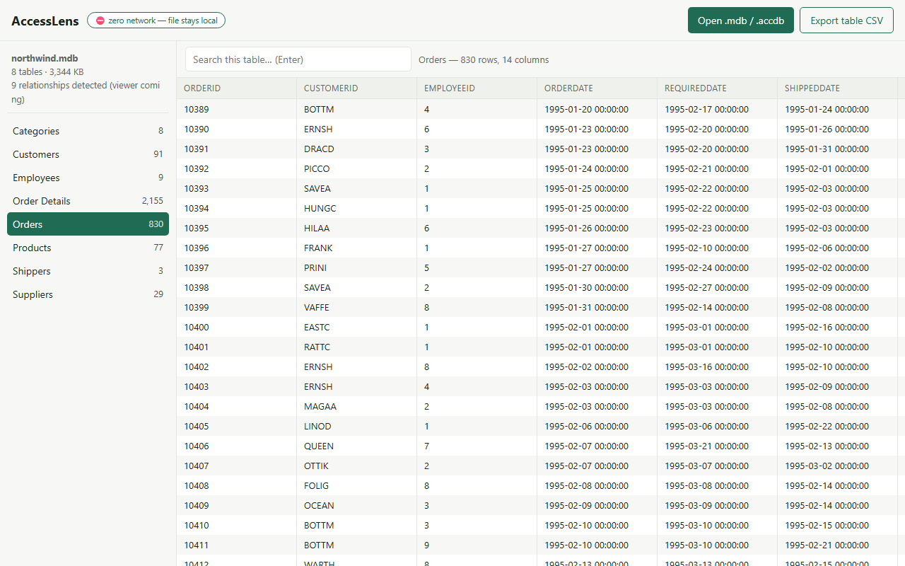
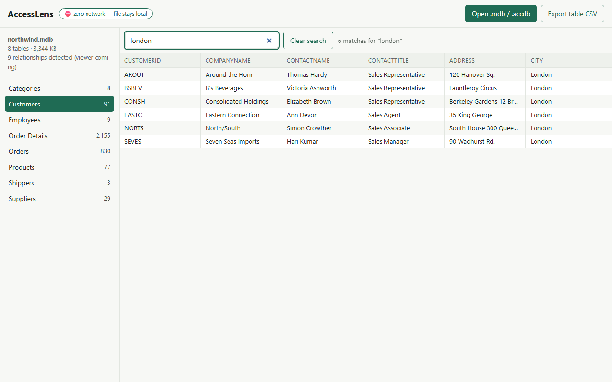
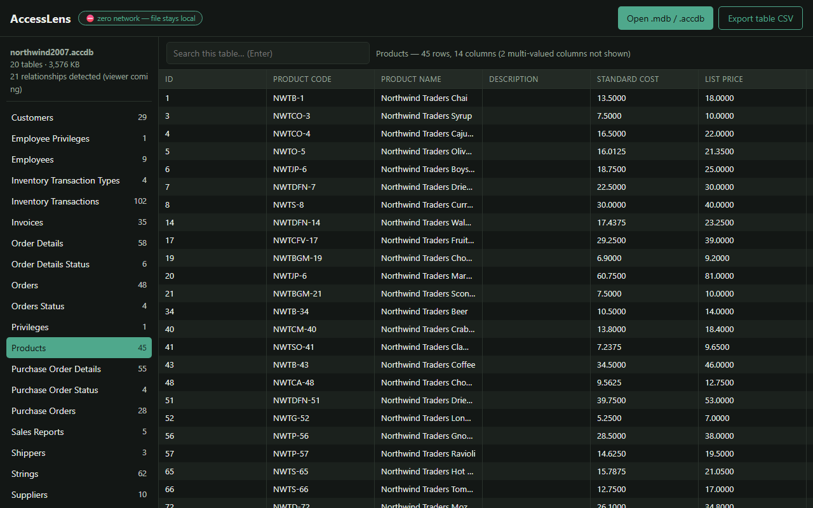
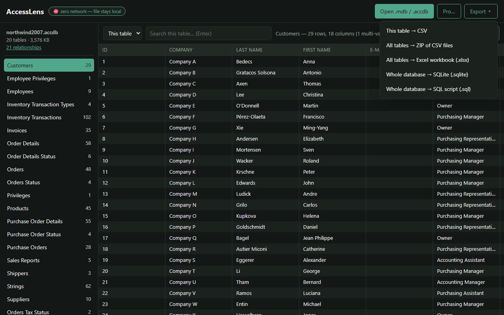
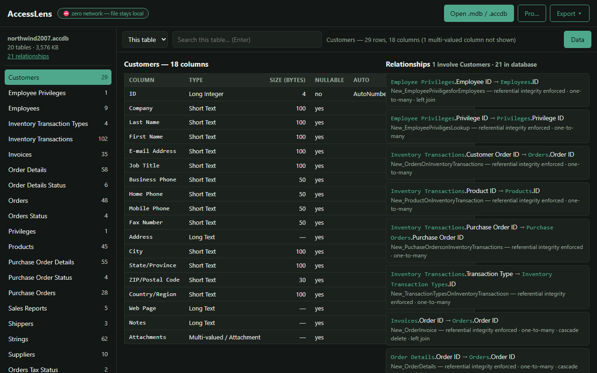

AccessLens
AccessLens
Open MDB & ACCDB files
without Microsoft Access
Been handed a legacy Access database and you don't have Access? AccessLens opens
.mdb and .accdb files right in a Chrome tab — browse every table,
search it, export to CSV, Excel or SQLite. Your file never leaves your computer.
- Zero permissions requested
- Works fully offline
- Access 97 → 2019
- Opens encrypted files
- CSV · Excel · SQLite export
Why not just use an online converter?
Because most of them want your database on their server.
The usual ways to read an .mdb file in a browser involve uploading it to
someone else's site, or granting an extension access to your Google Drive. That's a
genuine problem when the file is a client record set, an HR export, or anything else you
aren't allowed to hand to a third party.
AccessLens requests no permissions of any kind. No network permission, no host permissions, no storage permission, no content scripts. It cannot see your browsing, cannot touch other tabs, and has no technical means of sending your file anywhere — parsing happens inside the tab, on your machine.
You don't have to take that on trust. Open the extension's entry on the Chrome Web Store and look at the permissions list: it's empty. Or open your database with your Wi-Fi switched off — it works exactly the same.
What it looks like
Real screenshots, real Access files.




.accdb files, dark mode, and honest handling of exotic column types.

What you get
Every Access era
Access 97, 2000 and 2002/2003 .mdb files, plus Access 2007–2019 .accdb.
Encrypted databases
Opens password-protected files using Access 2010 RC4 and Office Agile encryption. The password is used locally and never stored.
No size limit on viewing
Paged loading and a virtualised table view, so tables with hundreds of thousands of rows stay responsive.
Search one table or all of them
Filter instantly across all columns, or search every table at once with the results grouped by table.
Export any table to CSV
One click, free at any size, opens cleanly in Excel or Google Sheets. Unicode and quoting handled correctly.
Export the whole database
Every table at once, as an Excel workbook (one sheet per table), a ZIP of CSVs, a SQLite database or a SQL script.
Schema and relationships
Each column's type, size and nullability, and every relationship between the tables.
Genuinely offline
Not "offline-capable" — it has no way to be online. Works on an air-gapped machine.
Free, with an optional Pro licence
Most files never need Pro, and everything that was free before Pro existed is still free.
Free, at any size
Open and browse any database, search within any table, the schema view, and export any table to CSV. No account, no sign-up, free at work too.
Free for most databases
Exporting the whole database at once and searching every table, for databases of up to 20 tables and 50,000 rows in total.
Pro, for bigger databases
Those two features above the limits. One-time: $5.99 for personal use, $15 for work use (covers the people at one organisation). The key is checked offline, so Pro sends nothing anywhere either. Licence terms and purchase
Honest limits
Things it deliberately doesn't do, so you can rule it out fast.
- Read-only. AccessLens views and exports; it never modifies your file.
- Tables and data only. Access forms, reports, macros and VBA aren't shown.
- Multi-valued and attachment columns (an Access 2007+ feature) can't be displayed. They appear as clearly-marked placeholders and are left out of exports.
- Legacy Jet-era passwords (Access 97–2003) are a formality of that old format. Like Access itself, AccessLens opens those files without needing the password.
Stuck on a specific error or machine?
Short, honest guides — the real causes and every fix, not just this one.
What is an .mdb file?
What the format is and every way to open one, with or without Access.
What is an .accdb file?
The Access 2007+ format: how to open it, convert it, and handle a password.
MDB viewers compared
Every way to open .mdb and .accdb files side by side: cost, platforms, and which ones upload your file.
“Unrecognized database format”
The version mismatches behind Access error 3343, and what to do about each.
“Cannot open a database created with a previous version”
Access 2013+ refuses Access 97 files. How to convert, or read them directly.
Open an .accdb on a Mac
Access has never shipped for macOS. The options that actually work.
Open an .accdb on a Chromebook
The one machine where a Chrome extension is the native answer.
No admin rights, nothing installable
Reading an Access file on a locked-down work laptop without uploading it anywhere.
Extension blocked by your administrator
What to send IT, what they need to check, and how they allow it by its ID.
Frequently asked questions
The things people actually ask before installing.
How do I open an .mdb file without Microsoft Access?
Install AccessLens, click the toolbar icon, and choose your .mdb or .accdb file. It opens in a browser tab where you can browse every table, search it, and export a table to CSV or the whole database to Excel, SQLite or a SQL script. Access does not need to be installed, and there's nothing to configure.
Does my database get uploaded anywhere?
No. The extension requests no permissions at all, including no network permission, so it has no technical means of sending your file anywhere. The permissions list on its Chrome Web Store listing is empty, and you can verify the behaviour by using it with your connection turned off.
Is it free?
Yes, for almost every file. Opening and browsing a database, searching within a table, the schema view, and exporting any table to CSV are free at any size, with no account and no sign-up. Exporting the whole database at once and searching every table at once are free for databases of up to 20 tables and 50,000 rows in total. Above that they need AccessLens Pro, a one-time licence: $5.99 for personal use, $15 for work use.
Which Access versions are supported?
Access 97, 2000 and 2002/2003 in the .mdb format, and Access 2007 through 2019 in the .accdb format.
Can it open password-protected or encrypted Access files?
Yes — Access 2010 RC4 and Office Agile encryption are both supported. You'll be prompted for the password, which is used locally and never stored.
Can I edit the database?
No, and that's deliberate. AccessLens is strictly read-only, so there is no way for it to corrupt or alter a file you were trusted with.
Does it work on Edge, Brave or other Chromium browsers?
It's distributed through the Chrome Web Store, which Edge, Brave and most other Chromium-based browsers can install from. It is only officially tested on Chrome.